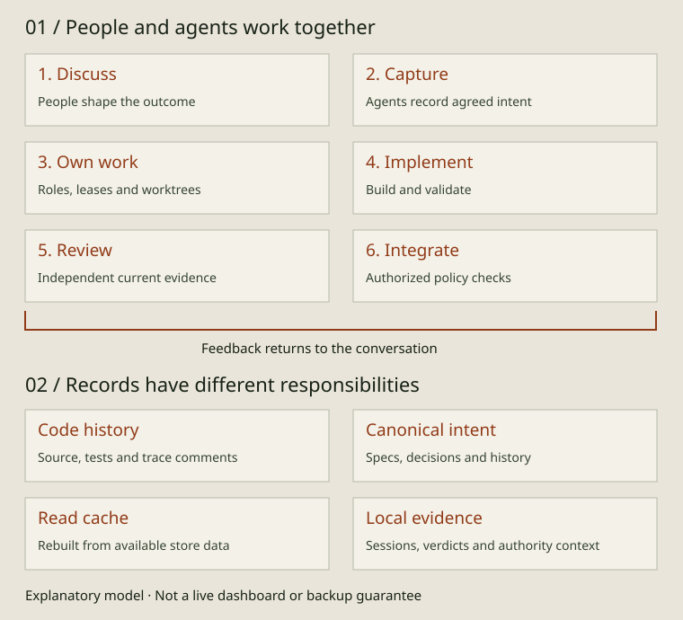

THE GOVERNED SOFTWARE FACTORY
From a conversation to a maintainable system

AIDA connects the work people and agents do with the intent behind it. Start with a conversation, develop the system, and keep enough structured context for the next change. You can remain involved throughout or delegate selected stages under the project's policy.
The collaboration loop
- Discuss the outcome. A person and coding agent explore the problem, constraints and alternatives. The person can develop, challenge and review the work throughout.
- Capture agreed intent. The agent records requirements, acceptance criteria and consequential decisions in the project graph. Ask to inspect the record before implementation.
- Own a bounded change. The work is assigned to a role and session. Isolated worktrees give separate changes their own checkout; leases and queue state coordinate ownership.
- Implement and validate. Build the agreed behavior, link it to its specs and run the relevant checks. New discoveries can require revised intent or a separate decision.
- Review independently. In the governed PR workflow, a separate reviewer evaluates the current change and its evidence. The author's self-check is useful preparation and does not constitute independent approval.
- Integrate under policy. The authorized shipping path checks the applicable evidence and gates. Integration can lead to another conversation; a merged change and a released product are separate milestones.
These are stages in an operating model, not a promise that every project uses one autonomy mode. The configuration guide explains how execution mode, guidance and authority remain distinct. The graphic is explanatory, not a live dashboard.
What progress means
In the standard PR lifecycle, Draft captures an idea, Approved records agreement, In Progress means implementation has started, and Done means work is finished on a branch. Completed follows recognized integration evidence on the default branch. Planned is optional; Needs Attention and terminal dispositions handle work that cannot simply proceed.
A status is a recorded signal, not proof that deployed behavior is correct. Read the lifecycle reference for transition rules and exceptions. Deployment and release need their own project workflow.
Four records with different jobs
- Code history: source, tests, trace comments and commits live on the product's code branches. Traces connect implementation to structured intent; they do not themselves approve a change.
- Canonical intent: the default git-canonical store uses the orphan
aida-storebranch and a live.aida-store/worktree. YAML spec objects contain requirements, relationships, comments and transition history. Store history is separate from code history and must be synchronized deliberately. Sibling-store projects use their configured separate store repository. - Derived read cache:
.aida/cache.dbindexes store data for reads. It is rebuildable from the available canonical store and is not a replacement for that history. Cache reads can report stale, deferred or busy context; inspect freshness rather than assuming every displayed view is current. - Local operational evidence: session files, verdict artifacts, holds and handoff notes have local runtime locations under
.aida/; machine grants and mandates have their own local authority context. Their scope, validation and retention differ from canonical intent. A store clone or cache rebuild does not recreate all of them or confer authority.
This is a map of responsibilities, not a backup recipe or complete directory inventory. Some coordination events also live in the store, and the storage reference describes the particular data surfaces. Back up the canonical histories and needed local evidence according to your actual project setup.
Keep the intent useful
For maintenance, ask the agent to locate the requirement and decision behind an existing behavior before changing it. aida why can resolve a code location through nearby trace comments. For enhancement, use the current acceptance criteria and relationships to identify what needs revising. For collaboration, hand over the agreed intent, implementation links and unresolved questions so another person or agent can continue.
The graph is structured project memory, not a transcript archive or complete observation of everything an agent did. Its value depends on what was captured and kept accurate. Ask for a capture sweep at handoff, verify the record and keep consequential corrections explicit.
Read the evidence behind the model
The getting-started guide covers everyday conversational use. Operators can inspect aida show, aida history, aida status and aida cache status; exact flags are in command help. Contributors can inspect the cache implementation, storage abstraction, session lifecycle and product architecture for the source behind these distinctions.